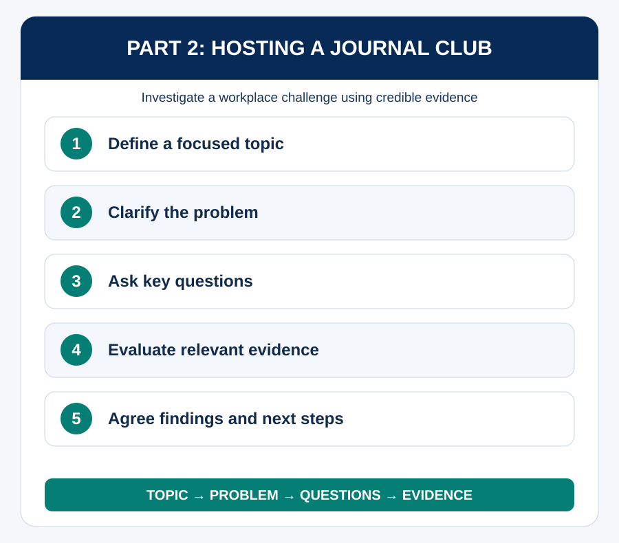

Purpose of Session
The purpose of this session is to help you develop the skills to investigate a real workplace challenge through research and evidence. You will learn how to define a topic, frame a problem, gather relevant sources, facilitate discussion and turn the discussion into useful findings and next steps.
Learning Outcomes
- Define a clear topic, problem and key questions for a journal club.
- Select and interpret relevant evidence from credible sources.
- Present an article or source in a concise and useful way.
- Facilitate discussion that leads to findings, gaps and next steps.
Time allocation: 60 minutes
Activities: 4.1 Topic, problem or question?; 4.2 Build the inquiry; 4.3 Break down the evidence; 4.4 Present and discuss; 4.5 From findings to next steps.
Think of a challenge in your work or studies where people have opinions, but you are not sure what the evidence says. How could a group investigate it together rather than relying only on assumptions?
Part 1: What Is a Journal Club?
A journal club is a structured discussion in which a team uses evidence and research to investigate a real problem or challenge related to its work. The purpose is not simply to present papers, but to understand a challenge, explore what research says and identify insights that can inform practice, systems or decisions.
Unlike a workshop, which focuses on skill development and hands-on practice, a journal club focuses on knowledge-building, evidence evaluation, discussion and critical thinking.
Activity 4.1: Topic, problem or question?
Classify each statement as a topic, problem or key question: Improving teamwork in hybrid environments; our team is struggling to share knowledge across projects; what strategies improve knowledge sharing in hybrid teams?
Part 2: Topic → Problem → Questions
A good journal club begins with a clear topic, then defines a specific problem or challenge and develops key questions to guide the search for evidence. This keeps the investigation focused and helps participants choose useful sources.
Follow the sequence: Topic → Problem → Questions → Evidence → Discussion → Findings / Next Steps. The problem should matter to the team but be focused enough to investigate meaningfully.

Activity 4.2: Build the inquiry
Work in pairs to turn a broad workplace topic into a focused inquiry. Specify the topic, problem or challenge, why it matters and two key questions.
Build the inquiry
Complete this activity in the interactive learning experience.
Open Interactive Activity →Recommended Readings and References
Return to the course menu.